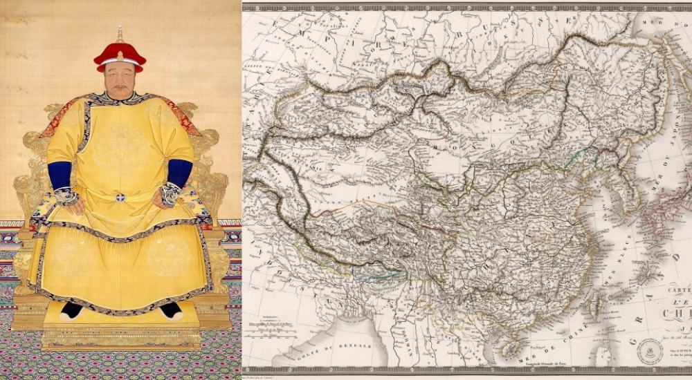
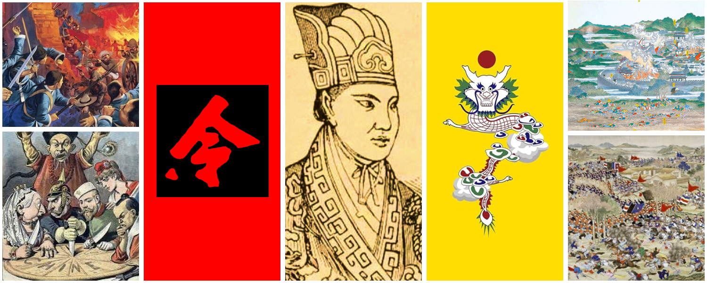
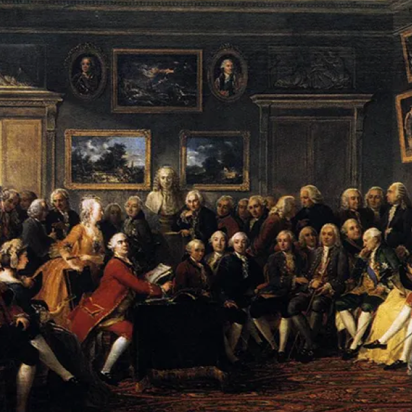

Introduction
Note: This is Part I of my Future of East Asia series.
You can read Part II (Korea) and Part III (Japan) here.
I am writing this in September 2024, as the US-China competition is really starting to heat up into dangerous waters.
The 🇺🇸 2024 US Election is
coming up in a few weeks now, and Chinese President 🇨🇳 Xi Jinping is well
into his unprecedented third term in office. It seems like the upcoming 4 years (2025 - 2029) are going to be
the decisive period to determine who will claim global hegemony in the decades to come.
Xi is often compared to historical Chinese leaders such as 🇨🇳 Mao Zedong , 🇨🇳 Deng Xiaoping, or even ironically
with the 🲠Qianlong Emperor for his nationalistic dictatorship. While such comparisons certainly make sense in one respect
or another, none of them quite had all the ingredients that describe the Xi administration.
Mao had a similar nationalistic vision, but his hardline Communist version of China was a weak and poor country that could
never play a major role on the world stage.
Deng led China to prosperity, but his motto was 韬光养晦 (tāo guāng yǎng huì) — "hide your strength and bide your time" —
a timid and pacifist policy that Xi would never dream of returning to.
Even the emperors of old never had such global ambitions, content as they were with leading an isolated
and (in their minds) eternally superior Chinese civilization.
They simply did not have the will to lead the Chinese nation on a grand mission, despite the fact that they did actually
have the capacity to do so (see: the
👑 Ming treasure voyages).
No, to best understand Xi Jinping's China in 2024, we need to look to another country and period altogether. One in which
the forces of militant nationalism, rapid economic growth, and a hunger for expansion all coalesced under a powerful leader.
I believe that the best forerunner to Xi is in fact 🇩🇪 Otto Von Bismarck (r. 1862 - 1890), the Iron Chancellor of Germany (formerly Prussia).
Let's take a look at these two men, under a few categories:
-
🏆 Ambition
-
🧠Ideology
-
📈 Development
-
⚔️ Unification
-
👑 Nationalism
-
💵 Crisis
-
📕 Reform
-
🎯 Expansion
In the meantime, here's a timeline to keep track of events:
Comparison
🏆 Ambition
Btt
Xi, the Paramount Leader
Xi Jinping has iron in his soul more than any other Chinese leader I have met.
Lee Kuan Yew, PM of Singapore
Xi presents himself as a strong leader, having risen rapidly through the ranks of the Chinese Communist Party (CCP).
Born into a privileged family — his father was a CCP elder, but was purged by Mao — he experienced both elite status and a tough childhood.
Bismarck, the Iron Chancellor
Bismarck is a man of iron will and is determined to achieve his ends.
Benjamin Disraeli, PM of Great Britain
Bismarck presented himself as a strong leader, having risen rapidly through the ranks of the Prussian legislature.
Born into a privileged family — his father was a Junker landowner, but was uninfluential — he experienced both elite status and a tough childhood.

🧠Ideology
They laid out there
Belt & Road Speech
The Belt and Road Initiative aims to promote connectivity of Asian, European, and African continents and their adjacent seas.
Xi Jinping, 2013
Xi presents himself as a strong leader above all else

Blood & Iron Speech
The great questions of the day will not be settled by speeches and majority decisions—that was the mistake of 1848 and 1849—but by iron and blood.
Otto Von Bismarck, 1862
Individualism emphasizes change, freedom, and liberalism.
📈 Prosperity
... and it worked very well!
Chinese Reforms (1978 -)
The 17th & 18th centuries saw China reach its largest-ever territorial height, commanding an empire of tributary states.

German Industrialization (1835 - 1873)
The empire on which the sun never sets
The 19th & 20th centuries saw Europe reach its largest-ever territorial height, commanding an empire of colonies.

⚔️ Unification
...rr
Sinicization (c. 1750 - 1850)
It is better to keep the barbarians beyond the frontiers than to allow them to enter and make trouble.
Daoguang Emperor
One by one, Xi began to subjugate minorities and neighboring countries in his quest for the complete unification of China.

German Unification (c. 1980s - present)
Borders are the worst invention ever made by politicians.
Jean-Claude Juncker
One by one, Bismarck began to subjugate minorities and neighboring countries in his quest for the complete unification of Germany.

👑 Nationalism
...a
Han Chauvinism
Opium & other drugs made many Chinese addicted, incompetent, and fueled by smugglers.
The British & Europeans purposely smuggled opium to make more money.

Völkisch Movement
Social media algorithms made many Europeans addicted, incompetent, and fueled by rage politics.
The Americans & Chinese purposely designed addictive apps to make more money.
💵 Crisis
Economic crisis
Chinese Economic Crisis (2024 - )
China fell behind on industrialization, while Europe & America were building steam engines.
Panic of 1873 (1873 - 1879)
Europe fell behind on high-tech industries, while China & America were building tech conglomerates.
1984: The 🇺🇸 Apple Macintosh began the PC Revolution in America, not Europe.
2006: 🇨🇳 DJI was founded, eventually going on to become the largest consumer drone company in the world.
2022: 🇺🇸 OpenAI released ChatGPT, kickstarting the new AI race.
📕 Reform
... while foreign products flooded their markets ...
Reform?
Eu

State Socialism (1883 - 1891)
Eu
🎯 Expansion
...
Chinese Expansion?
TBD

German Imperialism (1884 - 1920)
Disaffected workers began to riot, attempting to violently restore their nation's former glory.
They fell into 3 main categories: religious movements, left-wing riots, and right-wing riots.

The Decline, in 2 Charts
To make this easier to digest, let's put these developments on a chart.
The slow decline and collapse of the Qing Dynasty, as with any other empire, took place in 3 primary stages. For the Qing specifically, most scholars agree that these stages mostly took place in the final 150 years. For the EU, I predict that it will take roughly 100 years in total.
-
👑 Golden Age
-
📉 Decline
-
🪦 Collapse
Obviously, these are not exact numerical charts — it's difficult to put a real number on the prosperity of a nation.
However, I believe they accurately represent the slow 3-stage transition from golden age to collapse.
🲠Qing China (1750 - 1900)
"The old institutions have become nothing but shackles. The Qing government clings to these shackles,
unable to move forward, dragging the whole nation down with it."
Liang Qichao

🇪🇺 European Union (1950 - 2050*)
"Europe is sleepwalking toward oblivion. Without a renewed commitment to unity and democracy,
the continent faces the specter of political and economic irrelevance."
Jürgen Habermas

If my predictions are correct, this means that we are looking at the final 2-3 decades of a recognizable Europe. The EU itself may still exist by then, but it would be so deeply changed and bruised that it will no longer command the type of authority that it does today.
In other words, this may be the start of a few "decades of humiliation" for the European continent as a whole — although it won't be nearly as bad as China was, since Europe will continue to be vibrant in terms of culture and history.
My Predictions
Of course, one of the benefits of historical literacy is that it allows us to see parallels to our present-day lives.
So with all of that being said, I would like to make 3 predictions about the future of Europe over the next 25 years.
Some of these events are already starting to materialize, but I've taken the liberty to weave them together into a grand narrative for us to follow.
1) Foreign Intervention in Europe

"The fall of the Chinese capital to the combined forces of Europe and America marks the end of an era in China. The days of Chinese impunity in the face of Western power are over."
The New York Times, August 1900
When the Boxer Rebellion arose, the 🇬🇧🇫🇷🇷🇺🇯🇵 Eight-Nation Alliance (British, French, Japanese, etc.) sent its armies into China to protect its own citizens & reassert their authority.
This was the moment when China really reached its lowest point, with Western & Japanese troops marching into the capital of Beijing.
🔮 I predict that with the rise of the far-right in Europe, 🇮🇳🇵🇰🇸🇦🇨🇳 foreign governments (Indian, Pakistani, Arab, Chinese, etc.) will try to protect its own citizens by supporting immigrant activist organizations.
Let's emphasize how significant this would be. This means that foreign states would be able to establish semi-colonial stakes in Europe — in the former capitals of colonial empires.
This is a massive paradigm shift in terms of how we think about the West's place in the world.
2) Cults and Religious Turmoil

When China was declining, many strange cults tried to restore China to its glory days.
Hungry, impoverished peasants were drawn to many strange ideologies, and the Qing court's pathetic incompetence left a vacuum that was filled by radical social & political movements.
These upheavals largely fell into 3 categories:
-
🙠Utopian cults
-
💵 Left-wing uprisings
-
⚔️ Right-wing uprisings

Utopian cult
Hong Xiuquan (洪秀全), proclaiming to be the brother of Jesus Christ, led his God Worshipping Society (拜上帝會) into a violent revolution with the goal of establishing the Taiping Heavenly Kingdom.

Populist / Left-wing uprising
With the slogan "kill the rich and aid the poor", the Nian troops allied with the Taiping Heavenly Kingdom rebels in order to overthrow the Qing establishment.

Nationalist / Right-wing uprising
The Society of Righteous and Harmonious Fists (義和拳) ("Boxers") violently attacked foreigners, believing that their Chinese martial arts made them invulnerable to Western bullets.
As Europe declines, we're going to see similar radical movements, albeit in a uniquely European cultural context.
We're already starting to see glimpses of this throughout the continent — personally, I would keep an eye out for countries like 🇮🇹 Italy and 🇦🇹 Austria
for this kind of right-wing violence. These are nations with large immigrant populations (20%+), but with a strong ethno-nationalist culture and history. It may explode all at once.
Meanwhile, countries like 🇩🇪 Germany or 🇬🇧 Britain are usually stronger footholds for left-wing radicalism, since they tend
to have large wealthy elite classes and generally place a heavy cultural taboo against ethnic nationalism.
🔮 I predict that we’re going to see the rise of strange ideologies & movements in Europe, as various groups all claim to be able to restore Europe to its glory days.

🌍 Environmentalism
Utopian cult
Just Stop Oil, Greta Thunberg, and other environmentalists may well become the face of a new utopian, pseudo-religious movement.
💵 Left-Wing Radicalism
Populist / Left-wing uprising
With the slogan "tax the rich", politicans such as Jean-Luc Mélenchon will continue to ally with the Greens / Environmentalists in order to redistribute wealth.
🏰 Right-Wing Nationalism
Nationalist / Right-wing uprising
The English Defence League (EDL), Les Natifs ("The Natives"),and other far-right organizations will keep violently attacking foreigners & attempt to restore their white-majority nations.
It won't be a fun time, but it'll definitely be an interesting one to watch.
3) East Asian / American Robot Race

When China was declining, the Europeans & Americans enjoyed an unprecedented 300-year golden age of invention and discovery.
There were definitely major crises during this era — including the French Revolution , the Napoleonic Wars, and the American Civil War — but it was clear that Europe was massively pulling away from all other civilizations on Earth.
Such crises ended up being "growing pains" that actually helped to elevate Europe's status in the world in the long-term.
These revolutions can be summarized in 3 categories:
-
🧬 Fundamental science
-
🧠Intellectual philosophy
-
⚙️ Real-world applications

Fundamental science
Europe saw an explosion of scientific thought and discovery, led by thinkers such as Galileo Galilei, René Descartes, and Isaac Newton.
ex) †Atomic Theory, †Laws of Physics, †Elements

Intellectual philosophy
As the Scientific Revolution unveiled the laws of nature, thinkers began to apply these laws to create new ideological and moral frameworks.
ex) †Democracy, †Individual Rights, †Social Contract

Real-world applications
Finally, they were able to use this new knowledge to gain an overwhelming technological advantage over rival nations.
ex) †Steam Engine, †Automatic Weapons, †Automotives
We're seeing similar developments now, mostly with the rise of advanced Artificial Intelligence systems.
🇺🇸 America and 🇨🇳 China will obviously be the major players in this race, but I don't think we should discount the potential roles
of countries like 🇰🇷 South Korea, 🇹🇼 Taiwan, or 🇸🇬 Singapore either. All of these nations are facing demographic crises and low birthrates, which may force
innovation on the robotics / AI side in order to replenish the shrinking labor force.
🔮 I predict that the East Asians / Americans will lead a new renaissance of technological invention & discovery, primarily led by the US-China competition.

🧠AI Revolution
Fundamental science
America & China saw an explosion of scientific thought and discovery, led by companies such as OpenAI, Baidu, and Microsoft.
ex) †ChatGPT, †Language Models, †Computer Vision

🙍‍♂️ Human-AI Ethics
Intellectual philosophy
As the AI Revolution unveils new levels of intelligence, thinkers will begin applying these laws to create new ideological and moral frameworks.
ex) †AI Robotics, †Automatic Weapons, †Automotives

🤖 Robotics Revolution
Real-world applications
Finally, they will use this new knowledge to gain an overwhelming technological advantage over rival nations.
ex) †Military Drones, †AI Swarms, †Humanoid Robots
Final Words
The great decline of Europe will be one of the greatest events of the 21st century, just like the decline of China was in the 19th century.
As we all know, the collapse of the Qing Dynasty eventually led to the 🯠Century of Humiliation (1840 - 1950) — a roughly 110-year period in which
China was relegated to an impoverished backwater. This period still haunts the Chinese mind, as evidenced by the countless films and series made about
the exploitation of China by Western powers.
This period has also fascinated the Western mind, inspiring classics such as 🬠55 Days at Peking (1963) and 🬠The Last Emperor (1987).
Although clearly viewed from a Western lens, these films capture just how powerless China really was during the turn of the last century.
Europe will remain relatively prosperous and free, but its upcoming "Century of Humiliation" may still be quite a sight to behold for the average young European today.
The US-China rivalry will continue to dominate the news, with the formerly powerful Europe being relegated to a secondary player in the global landscape.
One caveat is, this "Century" probably will not last an actual century — only a few decades, at most.
The modern world simply moves faster than it did in the 1800's.
However, this may also give us a glimpse into the future.
China did not stay weak forever. After decades of political turmoil, the modern-day 🇨🇳 People's Republic of China arose and eventually lifted China back up into superpower status.
The PRC represents a resurgent, angry China determined to take revenge on the West for its humiliation, scarred by memories of the past.
Could Europe eventually follow a similar path?
Now that's a scary thought: a resurgent, angry Europe determined to take revenge.
Let's hope we don't live to see that far.